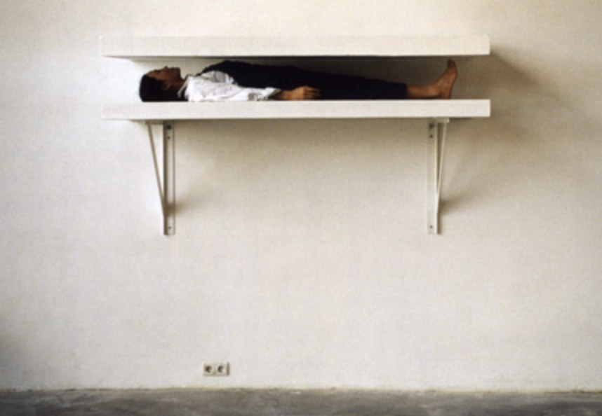

Altered Perceptions of Sleep: Performativity, Duration, and Embodied Relationships in Contemporary Sinophone Art
Abstract
This dissertation examines how contemporary Sinophone artists construct disturbed perceptual states associated with sleep through performance, spatial practice, and photographic staging. I argue that disturbed states of sleep, analyzed through embodied, phenomenological, and culturally embedded dimensions, shift narratives that treat sleep as metaphor or a private symptom into a conversation that recognizes material processes and cultural forces, rendering such states visible and meaningful within contemporary art. Methodologically, the dissertation brings together phenomenological insights, an anthropological perspective, and an account of threshold states, while critically avoiding overreliance on psychoanalysis. Employing a comparative analysis of works by Duan Yingmei, Li Liao, Peng Wu, and Chen Wei, the research does not suggest that the artists are disturbed; rather, the archetypes of sleep anomalies are externalized as symptoms in these artists’ works. Through interactions of body, space, and medium, the artists’ tactics manipulate duration, embodiment, and environment, constructing a material interpretation of disturbed states of sleep and connecting such states to cultural quagmires. While Western clinical frameworks primarily characterize sleep disturbances as a neurological phenomenon, Sinophone artistic practices offer interpretations that draw on folkloric traditions, embodied memory, and supernatural elements. Across the globe, the art-historical lexicon has adopted a Western dictionary, yet this repertoire cannot easily be placed within the Sinophonic language. Sinophone artists recast sleep disturbances as a culturally meaningful experience, blending symptoms with haunting and connecting individual sensations to collective stories of supernatural encounters. This perspective is supported by research on the prevalence of supernatural explanations for sleep paralysis across cultures.
Table of Contents
- Acknowledgments2
- Abstract4
- Introduction6
- Chapter 1: Performing Disturbed States: Duration, Exposure, and the Public Body14
- Duration and Spatial Disruption in the Performances of Yingmei Duan14
- Stillness, Exposure, and the Public Body in Urban Environments of Li Liao26
- Chapter 2: Mediated Disturbance: Environment and Perceptual Disorientation29
- Performativity of Bodily Constraint and Endurance by Peng Wu29
- Staged Nocturnal Environments in the Photography of Chen Wei34
- Comparative Conditions: Between Body and Environment39
- Conclusion40
- Bibliography
Selected Plates


PDF · 80 pages · opens in a new tab